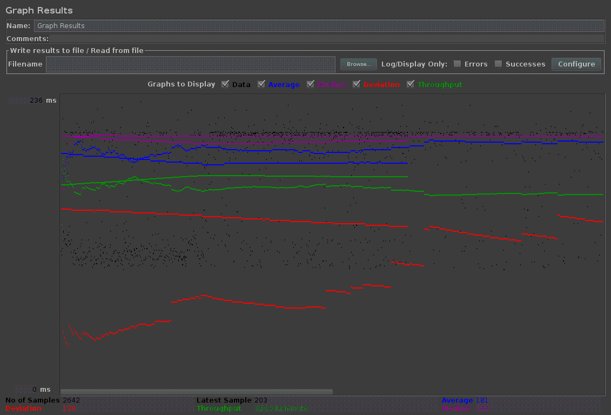
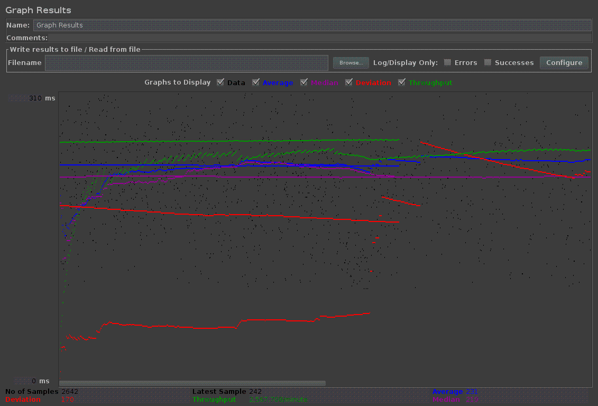
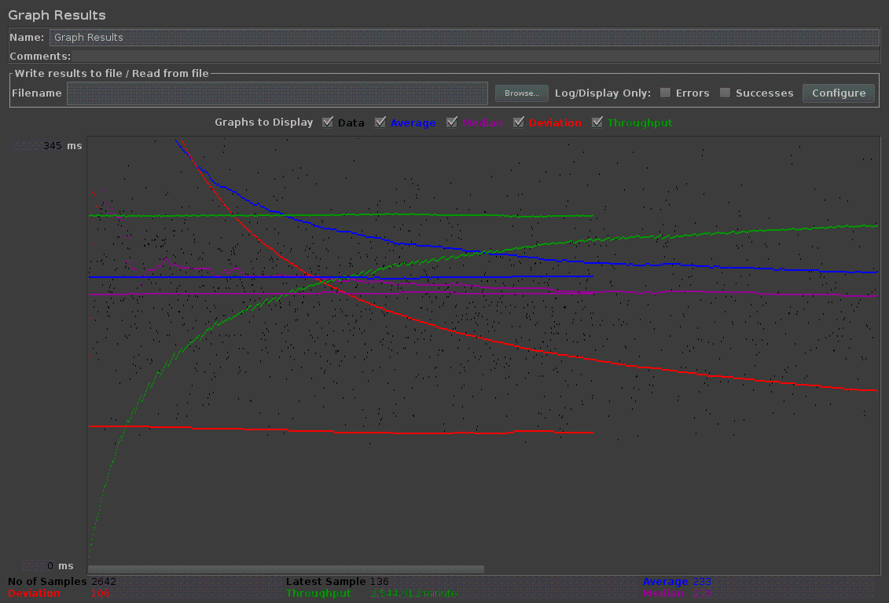
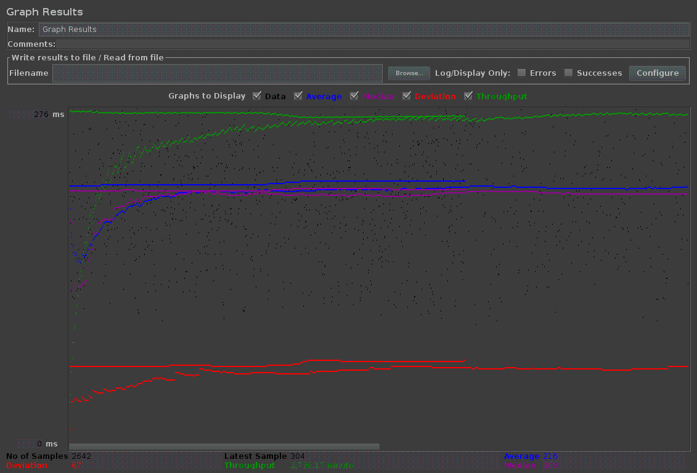
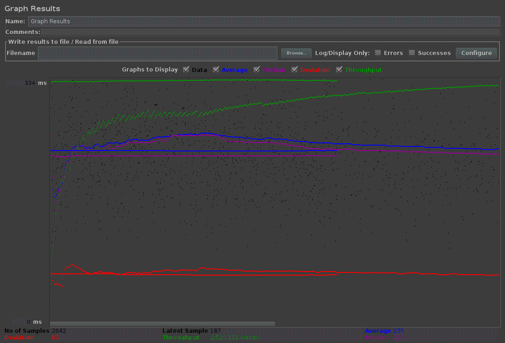
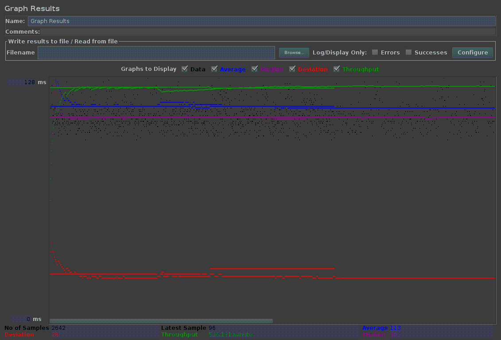
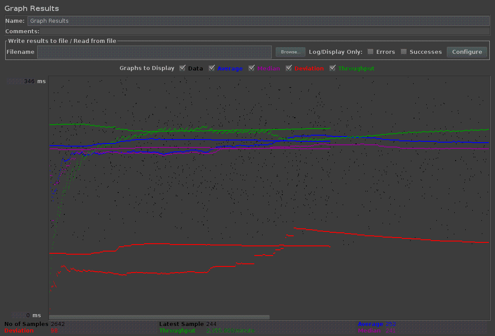
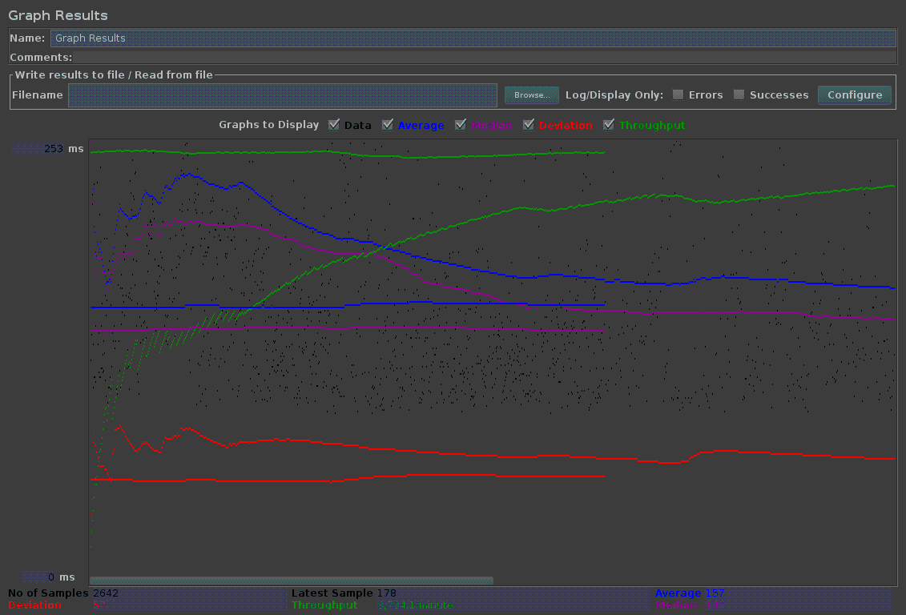

| Single-instance version cases | Graph Results Screenshot | Average Query Time(ms) | Average Search Servlet Time(ms) | Average JDBC Time(ms) | Analysis | |
| Case 1: HTTP/1 thread |  | 181 | 23.45 | 22.54 | -- | |
| Case 2: HTTP/10 threads |  | 231 | 43.71 | 43.88 | -- | |
| Case 3: HTTPS/10 threads |  | 233 | 46.34 | 45.74 | -- | |
| Case 4: HTTP/10 threads/No prepared statements |  | 216 | 42.43 | 42.80 | -- | |
| Case 5: HTTP/10 threads/No connection pooling |  | 235 | 37.21 | 28.10 | -- |
| Scaled version cases | Graph Results Screenshot | Average Query Time(ms) | Average Search Servlet Time(ms) | Average JDBC Time(ms) | Analysis |
| Case 1: HTTP/1 thread |  | 113 | 23.57 | 22.62 | -- |
| Case 2: HTTP/10 threads |  | 252 | 46.33 | 59.46 | -- |
| Case 3: HTTP/10 threads/No prepared statements | 225 | 47.92 | 61.16 | -- | |
| Case 4: HTTP/10 threads/No connection pooling |  | 157 | 32.31 | 31.36 | -- |